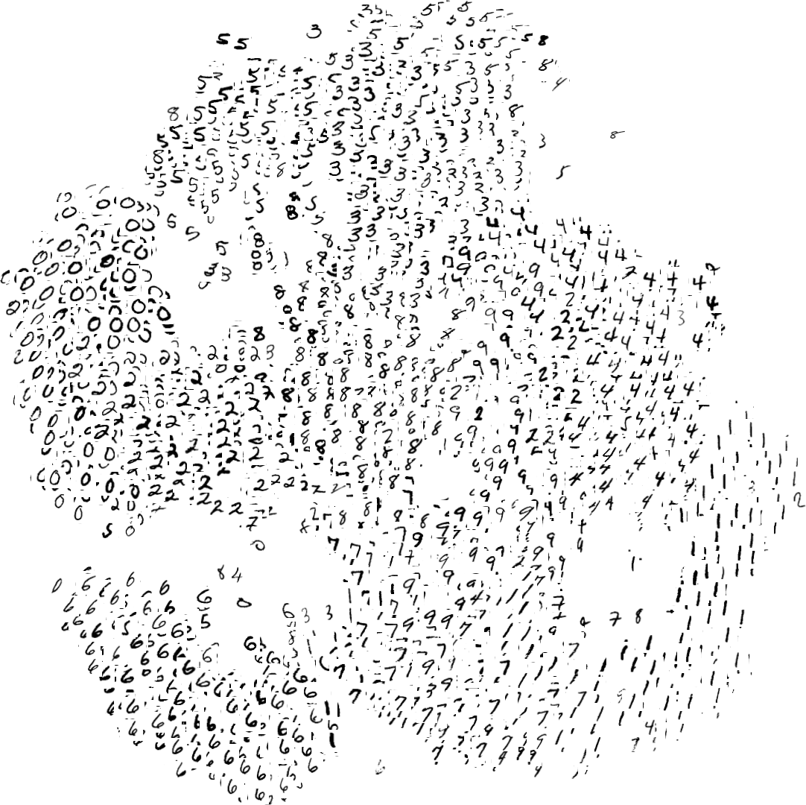

Fashion-MNIST: a Drop-In Replacement of MNIST for Benchmarking Machine Learning Algorithms
TL;DR
The dataset is here: https://github.com/zalandoresearch/fashion-mnist
I and my colleague Kashif Rasul create this image dataset as a drop-in replacement of MNIST for benchmarking machine learning algorithms. The dataset is published under MIT License.
We would appreciate references to the following paper if you use this dataset in publications:
Fashion-MNIST: a Novel Image Dataset for Benchmarking Machine Learning Algorithms. Han Xiao, Kashif Rasul, Roland Vollgraf. arXiv: cs.LG/1708.07747
Bibtex entry:1
2
3
4
5
6
7
8
9@online{xiao2017/online,
author = {Han Xiao and Kashif Rasul and Roland Vollgraf},
title = {Fashion-MNIST: a Novel Image Dataset for Benchmarking Machine Learning Algorithms},
date = {2017-08-28},
year = {2017},
eprintclass = {cs.LG},
eprinttype = {arXiv},
eprint = {cs.LG/1708.07747},
}
What is Fashion-MNIST?
Fashion-MNIST is a dataset of Zalando’s article images consisting of a training set of 60,000 examples and a test set of 10,000 examples. Each example is a 28x28 grayscale image, associated with a label from 10 classes. Fashion-MNIST is intended to serve as a direct drop-in replacement of the original MNIST dataset for benchmarking machine learning algorithms.
Here is an example how the data looks like (each class takes three-rows):

Why?
The original MNIST dataset contains a lot of handwritten digits. People from AI/ML/Data Science community love this dataset and use it as a benchmark to validate their algorithms. In fact, MNIST is often the first dataset they would try on. “If it doesn’t work on MNIST, it won’t work at all”, they said. “Well, if it does work on MNIST, it may still fail on others.”
Fashion-MNIST is intended to serve as a direct drop-in replacement for the original MNIST dataset to benchmark machine learning algorithms, as it shares the same image size and the structure of training and testing splits.
To Serious Machine Learning Researchers
Seriously, we are talking about replacing MNIST. Here are some good reasons:
- MNIST is too easy. Check out our side-by-side benchmark and “Most pairs of MNIST digits can be distinguished pretty well by just one pixel”
- MNIST is overused. Check out “Ian Goodfellow wants people to move away from mnist”
- MNIST can not represent modern CV tasks. Check out “Ideas on MNIST do not transfer to real CV”
Get the Data
You can use direct links to download the the dataset. The data is stored in the same format as the original MNIST data.
| Name | Content | Examples | Size | Link |
|---|---|---|---|---|
train-images-idx3-ubyte.gz |
training set images | 60,000 | 26 MBytes | Download |
train-labels-idx1-ubyte.gz |
training set labels | 60,000 | 29 KBytes | Download |
t10k-images-idx3-ubyte.gz |
test set images | 10,000 | 4.2 MBytes | Download |
t10k-labels-idx1-ubyte.gz |
test set labels | 10,000 | 5.0 KBytes | Download |
Or you can clone this repository, the dataset is under data/fashion. This repo contains some scripts for benchmark and visualization.
1 | git clone git@github.com:zalandoresearch/fashion-mnist.git |
Labels
Each training and test example is assigned to one of the following labels:
| Label | Description |
|---|---|
| 0 | T-shirt/top |
| 1 | Trouser |
| 2 | Pullover |
| 3 | Dress |
| 4 | Coat |
| 5 | Sandal |
| 6 | Shirt |
| 7 | Sneaker |
| 8 | Bag |
| 9 | Ankle boot |
Usage
Loading data with Python (numpy is required)
- use
utils/mnist_readerin this repo:1
2
3import mnist_reader
X_train, y_train = mnist_reader.load_mnist('data/fashion', kind='train')
X_test, y_test = mnist_reader.load_mnist('data/fashion', kind='t10k')
Loading data with Tensorflow
1 | from tensorflow.examples.tutorials.mnist import input_data |
Loading data with other languages
As one of the most popular dataset in the Machine Learning community, people have implemented MNIST loader in many languages. They can be used to load Fashion-MNIST dataset as well (may require decompressing first). Note that they are not tested by us.
Benchmark
We build an automatic benchmarking system based on scikit-learn, covering 125 classifiers with different parameters. Results can be found here.

You can reproduce the results by running benchmark/runner.py. A recommend way is to build and deploy this docker container.
You are welcome to submit your benchmark. Please create a new issue, your results will be listed here. Check out the Contributing section for details. Before submitting a benchmark, please make sure it is not listed in this list.
Visualization
t-SNE on Fashion-MNIST (left) and original MNIST (right)

PCA on Fashion-MNIST (left) and original MNIST (right)
License
The MIT License (MIT) Copyright © [2017] Zalando SE, https://tech.zalando.com
Permission is hereby granted, free of charge, to any person obtaining a copy of this software and associated documentation files (the “Software”), to deal in the Software without restriction, including without limitation the rights to use, copy, modify, merge, publish, distribute, sublicense, and/or sell copies of the Software, and to permit persons to whom the Software is furnished to do so, subject to the following conditions:
The above copyright notice and this permission notice shall be included in all copies or substantial portions of the Software.
THE SOFTWARE IS PROVIDED “AS IS”, WITHOUT WARRANTY OF ANY KIND, EXPRESS OR IMPLIED, INCLUDING BUT NOT LIMITED TO THE WARRANTIES OF MERCHANTABILITY, FITNESS FOR A PARTICULAR PURPOSE AND NONINFRINGEMENT. IN NO EVENT SHALL THE AUTHORS OR COPYRIGHT HOLDERS BE LIABLE FOR ANY CLAIM, DAMAGES OR OTHER LIABILITY, WHETHER IN AN ACTION OF CONTRACT, TORT OR OTHERWISE, ARISING FROM, OUT OF OR IN CONNECTION WITH THE SOFTWARE OR THE USE OR OTHER DEALINGS IN THE SOFTWARE.